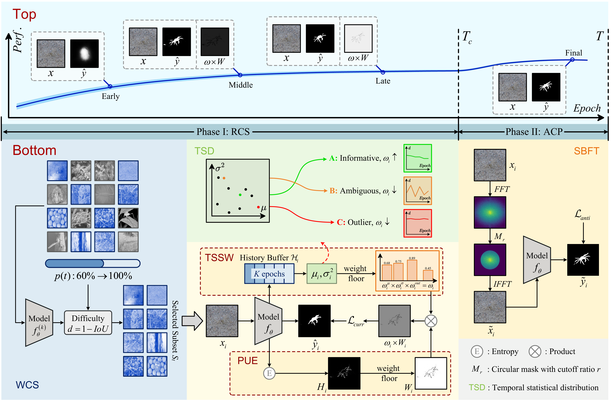
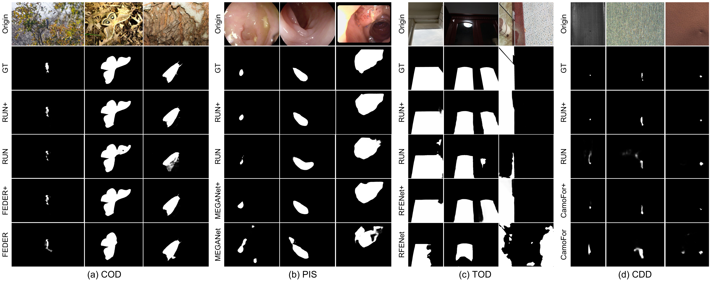

Robust Curriculum Selection
Temporal statistics of sample losses separate hard-but-informative images from ambiguous or noisy samples, forming a stable learning route.

Learning phases that first stabilize optimization and then deliberately increase task difficulty.
Extra inference parameters introduced by the training framework.
Designed for context-entangled content segmentation, including camouflaged scenes.
Method
CurriSeg models learning as a progression: robust curriculum selection first builds reliable representations, then anti-curriculum promotion forces the network to discover deeper contextual cues.
Temporal statistics of sample losses separate hard-but-informative images from ambiguous or noisy samples, forming a stable learning route.
Temporal sample weighting and pixel-level uncertainty estimation reduce unstable early gradients while keeping useful difficulty signals.
Spectral-Blindness Fine-Tuning suppresses high-frequency shortcuts, encouraging low-frequency structural and contextual reasoning.
Framework
The framework combines temporal difficulty modeling, uncertainty-aware weighting, and spectral perturbation in one training pipeline.
Visual Comparison
CurriSeg improves baselines over camouflaged object detection, polyp image segmentation, transparent object detection, and concealed defect detection examples.

Usage
The repository provides PyTorch training, anti-curriculum fine-tuning, and testing scripts. Common CECS/COD benchmarks can be found in awesome-concealed-object-segmentation.
python Train.py \
--train_root YOUR_TRAININGSETPATH \
--val_root YOUR_VALIDATIONSETPATH \
--save_path YOUR_CHECKPOINTPATHpython anti_curri_stage.py \
--train_root YOUR_TRAININGSETPATH \
--val_root YOUR_VALIDATIONSETPATH \
--save_path YOUR_ANTI_CURRI_CHECKPOINTPATH \
--load YOUR_CHECKPOINTPATH/Net_epoch_best.pth \
--use_sbftpython Test.py \
--pth_path YOUR_CHECKPOINTPATH/Net_epoch_best.pth \
--test_dataset_path YOUR_TESTINGSETPATHContact
Please contact us via email at chunminghe19990224@gmail.com or chunming.he@duke.edu.
Citation
@inproceedings{he2026curriseg,
title={Refining Context-Entangled Content Segmentation via Curriculum Selection and Anti-Curriculum Promotion},
author={He, Chunming and Zhang, Rihan and Xiao, Fengyang and Zhang, Dingming and Cao, Zhiwen and Farsiu, Sina},
booktitle={International Conference on Machine Learning (ICML)},
year={2026}
}